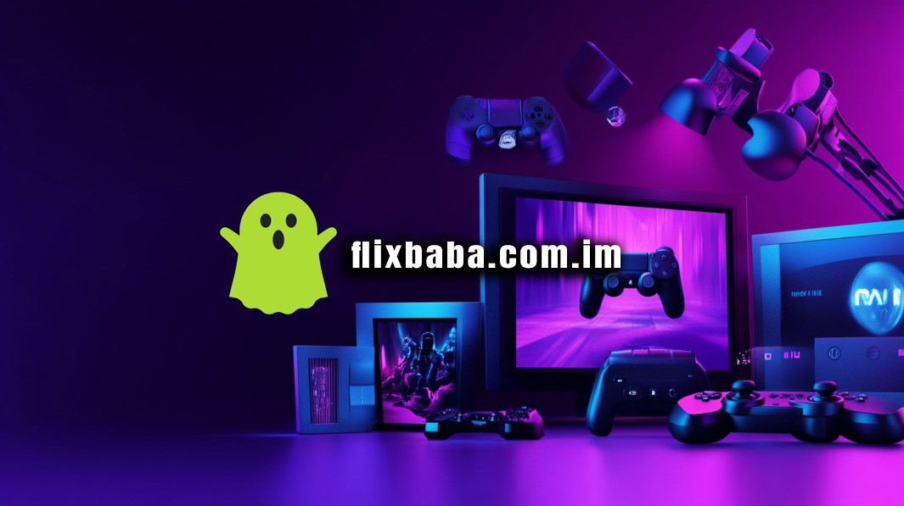

Flixbaba: Stream Free Movies & TV Shows Online
Flixbaba is your go-to platform for streaming a wide range of movies and TV shows without any subscription or sign-up requirements. Whether you're into action-packed thrillers or heartwarming dramas, Flixbaba offers a diverse library to cater to all tastes.

Why Choose Flixbaba?
- Free Access: Enjoy unlimited streaming without any fees.
- No Registration: Start watching instantly without creating an account.
- Vast Library: Access a wide range of movies and TV shows across various genres.
- Multi-Device Compatibility: Stream on your smartphone, tablet, or desktop seamlessly.
- User-Friendly Interface: Navigate through content effortlessly with an intuitive design.
Key Features of Flixbaba
Extensive Content Library
Flixbaba boasts a vast collection of movies and TV shows, including the latest releases and timeless classics. Whether you're in the mood for a comedy, horror, romance, or documentary, you'll find something that suits your preferences.
High-Quality Streaming
Experience high-definition streaming for an immersive viewing experience. Flixbaba ensures that all content is available in the best possible quality.
Regular Updates
The platform is frequently updated with new content, ensuring that you have access to the latest movies and episodes as they become available.
Search and Filter Options
Use the advanced search and filter options to find content based on genre, release year, or popularity, making it easier to discover new favorites.
How to Use Flixbaba
- Visit the official Flixbaba website.
- Browse through the categories or use the search bar to find specific titles.
- Click on the movie or show you wish to watch.
- Press the play button and enjoy streaming without any interruptions.
Expert Opinion
"Flixbaba revolutionizes the way we access entertainment by eliminating the barriers of cost and registration. It's a game-changer for movie enthusiasts worldwide."
Frequently Asked Questions
Is Flixbaba legal to use?
Flixbaba operates in a legal gray area. While it offers free streaming, users should be cautious and consider using a VPN to protect their privacy.
Do I need to create an account to watch content?
No, Flixbaba allows you to stream content without any registration or sign-up.
Can I download movies or shows from Flixbaba?
Currently, Flixbaba does not offer a download option. Streaming is available directly through the website.
Is there a mobile app for Flixbaba?
As of now, Flixbaba does not have an official mobile app. However, the website is mobile-friendly and can be accessed through any browser.
How often is new content added?
Flixbaba updates its library regularly, adding new movies and TV show episodes to keep the content fresh and engaging.
Conclusion
Flixbaba stands out as a premier destination for free, high-quality streaming of movies and TV shows. Its user-centric approach, combined with a vast content library and seamless accessibility, makes it a top choice for entertainment seekers. Dive into the world of Flixbaba and enjoy endless hours of entertainment without any strings attached.